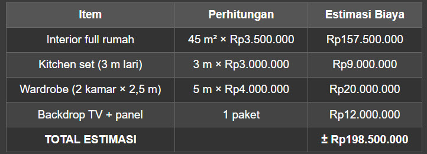
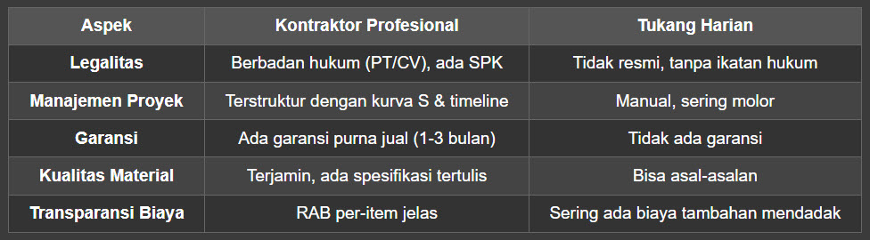

Kamar mandi bocor, keramik retak, atau tampilan yang sudah membosankan? Renovasi kamar mandi sering dianggap pekerjaan kecil, padahal ini area paling teknis di dalam rumah karena bersentuhan dengan air setiap hari. Untuk kamar mandi ukuran 2×2 meter di Bandung, estimasi pasar 2026 berada di kisaran Rp7–15 juta (minimalis), Rp15–25 juta (standar), dan Rp25–45 juta ke atas (premium), dengan durasi pengerjaan 7–21 hari kerja.
Di panduan ini kami bahas tuntas: rincian estimasi biaya per komponen, faktor yang membuat anggaran membengkak, pilihan material (keramik vs granit, shower vs bathtub, kloset duduk), tahapan kerja 7 langkah, 7 kesalahan umum, sampai checklist memilih kontraktor renovasi kamar mandi di Bandung. Semua angka kami labeli estimasi pasar supaya bisa langsung Anda pakai sebagai pembanding penawaran yang masuk. Yuk simak sampai habis! 👇
Ringkasnya: renovasi kamar mandi 2×2 m di Bandung berkisar Rp7–15 juta (minimalis), Rp15–25 juta (standar), dan Rp25–45 juta+ (premium), selesai dalam 7–21 hari kerja. Tiga pos yang tidak boleh dihemat adalah waterproofing, plumbing, dan kemiringan lantai menuju floor drain — tiga hal inilah penyebab utama kebocoran dan bongkar ulang.
📌 Daftar Isi
- Sekilas Renovasi Kamar Mandi: Cakupan dan Proporsi Biaya
- Estimasi Biaya Renovasi Kamar Mandi per Komponen
- Faktor yang Mempengaruhi Biaya di Bandung
- Pilihan Material: Keramik vs Granit, Shower vs Bathtub, Kloset
- Tahapan Renovasi Kamar Mandi Step-by-Step (7 Langkah)
- 7 Kesalahan Umum dan Cara Menghindarinya
- Tips Memilih Kontraktor + Checklist
- Kesimpulan dan Konsultasi
- FAQ: Pertanyaan yang Sering Ditanyakan
🔎 Sekilas Renovasi Kamar Mandi Bandung: Cakupan dan Proporsi Biaya
Renovasi kamar mandi adalah pekerjaan memperbaiki dan meningkatkan kualitas area basah di dalam rumah, mencakup bongkar material lama, waterproofing, pemasangan keramik atau granit, penggantian sanitair, perbaikan pipa dan plumbing, plafon, kelistrikan, sampai finishing. Karena semuanya berada di satu ruangan kecil, kesalahan di satu tahap hampir selalu berujung pada bongkar ulang — itulah alasan perencanaan dan RAB rinci jauh lebih penting daripada sekadar membandingkan harga borongan.
Secara umum, komposisi biaya renovasi kamar mandi terbagi seperti ini:
- 🚿 Plumbing dan pipa (air bersih, air kotor, floor drain): sekitar 20–30% dari total biaya.
- 🧱 Ubin dinding dan lantai (material dan pemasangan): sekitar 20–25%.
- 👷 Jasa tukang dan pengawasan: sekitar 20–25%.
- 💧 Waterproofing dan perbaikan struktur: sekitar 10–15%.
- 🚽 Sanitair dan aksesori (kloset, wastafel, shower, cermin): sekitar 15–20%.
- 💡 Plafon, pencahayaan, dan ventilasi: sisa porsi, sekitar 5–10%.
Catatan penting: seluruh angka di artikel ini adalah estimasi pasar berupa rentang, bukan harga resmi NW28 dan bukan harga final. Biaya akhir dipengaruhi luas ruangan, merek material, akses lokasi, upah tukang, dan kondisi struktur. Harga pasti hanya bisa ditetapkan setelah survei lokasi dan penyusunan RAB.
💰 Estimasi Biaya Renovasi Kamar Mandi per Komponen (2026)
Rata-rata pemilik rumah di Bandung mengeluarkan Rp7–15 juta untuk renovasi kamar mandi 2×2 meter level minimalis, Rp15–25 juta untuk level standar, dan Rp25–45 juta ke atas untuk level premium. Perbedaannya bukan hanya pada material, tetapi juga pada jenis sanitair, sistem plumbing, dan tingkat finishing. Berikut rincian per komponen yang bisa Anda pakai sebagai pembanding penawaran.
⚠️ Estimasi pasar: angka di bawah adalah rentang estimasi pasar untuk kamar mandi rumah tinggal berukuran ±2×2 meter (4 m²) di Bandung, bukan harga resmi NW28 maupun harga final. Nilai sebenarnya bergantung pada merek material, kondisi struktur, akses lokasi, dan lingkup pekerjaan yang disepakati.
| Komponen Pekerjaan | Satuan | Minimalis | Standar | Premium |
| Bongkar keramik/sanitair lama dan buang puing | per m² | Rp45.000–65.000 | Rp65.000–85.000 | Rp85.000–120.000 |
| Waterproofing (minimal 2 lapis + tes rendam) | per m² | Rp50.000–75.000 | Rp75.000–100.000 | Rp100.000–150.000 |
| Keramik/granit dinding dan lantai (material + pasang) | per m² | Rp120.000–200.000 | Rp200.000–350.000 | Rp350.000–700.000 |
| Sanitair set (kloset + wastafel + shower) | per set | Rp1,5–3,5 juta | Rp3,5–8 juta | Rp8–20 juta |
| Plafon + titik lampu | per m² | Rp150.000–250.000 | Rp250.000–400.000 | Rp400.000–700.000 |
| Pipa dan plumbing (air bersih, air kotor, floor drain) | per lingkup | Rp1,5–3 juta | Rp3–5 juta | Rp5–9 juta |
| Jasa tukang dan pemasangan (borongan) | per kamar mandi | Rp3,5–7 juta | Rp7–12 juta | Rp12–20 juta |
| TOTAL estimasi kamar mandi ±2×2 m | per proyek | Rp7–15 juta | Rp15–25 juta | Rp25–45 juta+ |
Cara Membaca Tabel dan Dana Cadangan
Kenapa dipakai rentang, bukan satu angka? Karena dua kamar mandi dengan ukuran sama bisa berbeda biaya hanya karena merek keramik dan jarak titik pipa. Selalu sediakan dana cadangan 10–15% dari nilai kontrak untuk mengantisipasi temuan di lapangan seperti pipa keropos, keramik lama yang menempel kuat, atau struktur lantai yang tidak rata. Permintaan penawaran tanpa cadangan hampir selalu berakhir dengan negosiasi ulang di tengah pekerjaan.
Estimasi Cepat per Ukuran Kamar Mandi
- 📐 Kamar mandi 1,5×2 m (3 m²), level standar: estimasi pasar Rp12–20 juta.
- 📐 Kamar mandi 2×2 m (4 m²), level standar: estimasi pasar Rp15–25 juta.
- 📐 Kamar mandi 2×3 m (6 m²), level standar: estimasi pasar Rp22–35 juta.
- 📐 Kamar mandi 2×3 m dengan bathtub dan partisi kaca, level premium: bisa melewati Rp45 juta.
Borongan atau Harian: Mana yang Lebih Aman?
Sistem harian cocok bila ruang lingkupnya belum jelas — misalnya Anda masih mendiagnosis sumber kebocoran. Upah tukang harian umumnya berada di kisaran Rp100.000–250.000 per orang per hari (estimasi pasar), tetapi biaya total mudah membengkak karena durasi bisa melar. Sistem borongan dengan RAB rinci lebih aman untuk renovasi total: harga terkunci, jadwal jelas, dan Anda punya dasar untuk menagih kualitas. Kuncinya satu — minta RAB per item, bukan harga global.
📊 Faktor yang Mempengaruhi Biaya Renovasi Kamar Mandi di Bandung
Biaya renovasi kamar mandi tidak ditentukan oleh luas saja. Delapan faktor berikut biasanya menjadi penyebab utama selisih besar antara dua penawaran untuk pekerjaan yang terlihat sama.
- Ukuran dan tata letak. Ruangan di bawah 2 m² menyulitkan akses kerja dan sering menaikkan biaya per meter persegi.
- Pemindahan titik plumbing. Bila kloset atau shower dipindah, jalur pipa, kemiringan lantai, dan waterproofing harus dibuat ulang.
- Kondisi struktur dan pipa lama. Pipa keropos atau lantai bergelombang menambah pekerjaan perbaikan sebelum finishing dimulai.
- Level material. Granit ukuran besar, sanitair impor, dan partisi kaca tempered menaikkan biaya material secara signifikan.
- Lokasi dan akses di Bandung. Area seperti Dago, Setiabudi, atau perumahan di Lereng utara bisa lebih mahal karena akses material; gang sempit menambah waktu angkut manual.
- Posisi lantai. Kamar mandi di lantai dua atau lebih membutuhkan jalur pipa tambahan dan perkuatan waterproofing yang lebih ketat.
- Waktu pelaksanaan. Target waktu yang sangat singkat biasanya memerlukan tambahan tenaga dan kerja lembur.
- Sistem kontrak. RAB rinci dengan pengawasan berkala lebih mahal di atas kertas, tetapi jauh lebih murah daripada bongkar ulang.
Bila renovasi kamar mandi merupakan bagian dari pekerjaan yang lebih besar, sebaiknya alokasikan anggaran antar-ruangan sejak awal agar total biaya tetap terkendali — bahasan lengkapnya ada di artikel kami tentang estimasi biaya renovasi rumah di Bandung.

🧱 Pilihan Material: Keramik vs Granit, Shower vs Bathtub, Kloset
Material menentukan biaya sekaligus usia pakai kamar mandi Anda. Berikut perbandingan jujurnya untuk area basah, beserta rekomendasi yang paling rasional untuk rumah tinggal di Indonesia.
Keramik vs Granit dan Porcelain Tile
- 💰 Keramik standar (30×30 atau 40×40 cm) paling hemat di awal, sekitar Rp60.000–120.000 per m² untuk material — estimasi pasar.
- 🛡️ Granit tile dan porcelain tile memiliki daya serap air jauh lebih rendah sehingga lebih tahan lumut dan noda, tetapi harganya Rp150.000–400.000 per m².
- 📐 Ukuran 60×60 cm ke atas membuat nat lebih sedikit dan ruangan terasa lebih lega — cocok untuk kamar mandi kecil.
- 🧩 Kompromi paling rasional: granit pada lantai dan dinding bawah (area basah), keramik standar pada dinding atas.
- 🚫 Hindari keramik bertekstur licin di lantai kamar mandi dinding batu alam — pilih keramik bertekstur anti-slip.
Shower vs Bathtub
Shower lebih hemat air, hemat ruang, dan lebih mudah dirawat, sehingga hampir selalu menjadi pilihan tepat untuk kamar mandi di bawah 4 m². Bathtub membutuhkan area minimal sekitar 1,7×0,8 meter, struktur lantai yang kuat, dan aliran air yang melimpah; biaya sanitair dan pipa juga lebih tinggi. Bila tetap ingin memakai bathtub, siapkan partisi kaca dan perhatikan titik pembuangan air agar tidak menyisakan genangan.
Kloset: Jongkok, Duduk, Gantung, atau Smart Toilet
- 🚽 Kloset jongkok murah dan lazim, tetapi kurang nyaman untuk orang tua atau tamu.
- 🚽 Kloset duduk standar adalah pilihan paling umum — harga mulai sekitar Rp1 juta (estimasi pasar) dan mudah dirawat.
- 🚽 Kloset gantung (wall-hung) tampil modern dan lantai lebih mudah dibersihkan, tetapi memerlukan rangka tersembunyi dan dinding perkuatan.
- 🚽 Smart toilet menambah fungsi bidet otomatis, pemanas dudukan, dan pengering, dengan konsekuensi titik listrik dan air khusus.
Plafon, Ventilasi, dan Pencahayaan
Plafon PVC lebih tahan lembap dan lebih ekonomis perawatan dibanding gypsum dan kalsiboard, yang tetap bisa dipakai asal difinishing cat tahan jamur. Karena kelembapan adalah masalah paling umum di kamar mandi, sertakan exhaust fan yang mengarah ke luar (bukan ke plafon), lampu dengan IP rating untuk area basah, dan pencahayaan tambahan di atas cermin agar wajah tidak tampak gelap.
Waterproofing: Komponen Kecil, Risiko Terbesar
Waterproofing gagal adalah penyebab kebocoran paling umum, dan biaya perbaikannya jauh lebih besar karena harus membongkar keramik. Aplikasi waterproofing dengan minimal dua lapis memakan waktu curing 24–48 jam per lapisan, ditambah tes rendam 24 jam sebelum keramik dipasang. Bila Anda mencari mitra yang menangani detail area basah sekaligus penyesuaian desainnya, NW28 melalui layanan jasa renovasi dan desain interior Bandung biasa mengerjakan pembuatan kabinet vanity, cermin custom, dan finishing akhir kamar mandi agar menyatu dengan konsep ruangan.
🛠️ Tahapan Renovasi Kamar Mandi Step-by-Step (7 Langkah)
Durasi normal renovasi kamar mandi adalah 7–21 hari kerja, tergantung luas, tingkat kerumitan, dan kondisi struktur. Jika pekerjaan dilakukan bertahap, urutan di bawah ini sebaiknya tidak diacak karena setiap langkah menjadi dasar langkah berikutnya.
- Survei dan diagnosis kondisi awal. Cek sumber rembesan, kondisi pipa, kemiringan lantai, dan kekuatan dinding sebelum ada keputusan bongkar.
- Brief dan desain. Tetapkan tata letak final, posisi titik air, dan pemilihan material. Bila ingin gambar kerja dan visual 3D, lihat penjelasan kami tentang proses dan biaya jasa arsitek di Bandung.
- Penyusunan RAB dan kontrak. Rinci per item pekerjaan, lengkap dengan spesifikasi material, jadwal, termin pembayaran, dan masa garansi.
- Bongkar dan pembuangan puing. Proteksi dulu area lain di rumah (tangga, lantai kayu, pintu) sebelum alat berat atau palu masuk.
- Perbaikan struktur dan waterproofing. Ratakan lantai, aplikasi waterproofing minimal dua lapis, lalu tes rendam 24 jam dan pastikan tidak ada rembesan ke lantai bawah.
- Instalasi pipa, keramik, plafon, dan sanitair. Pasang pipa air bersih dan air kotor, keramik atau granit, plafon, lampu, dan sanitair secara berurutan.
- Finishing dan serah terima. Pemasangan aksesori, sealant, pengetesan semua aliran air, final cleaning, dan serah terima bersama dokumen garansi.
Satu catatan yang sering diabaikan: tahap waterproofing tidak bisa dipercepat. Mencicil pekerjaan keramik di hari yang sama dengan pelapisan waterproofing adalah cara paling cepat mendapatkan kebocoran. Beri jeda curing yang benar, lakukan tes rendam, dan baru lanjut ke pemasangan keramik.
⚠️ 7 Kesalahan Umum Renovasi Kamar Mandi (dan Cara Menghindarinya)
Sebagian besar kegagalan renovasi kamar mandi bukan karena tukangnya kurang terampil, melainkan karena tahap perencanaan yang dilewati. Tujuh kesalahan berikut paling sering kami temui.
- Bongkar dulu, diagnosis belakangan. Perbaikan: lakukan survei dan tentukan sumber masalah sebelum memesan material.
- Memotong biaya waterproofing. Perbaikan: anggap pos ini sebagai bagian wajib, bukan opsi tambahan yang bisa dinegosiasi.
- Tanpa gambar kerja. Perbaikan: minta sketsa tata letak dan detail titik air sebelum pekerjaan dimulai.
- Kemiringan lantai menuju floor drain salah. Perbaikan: patuhi kemiringan minimal sekitar 1–2% dan uji dengan air setelah keramik terpasang.
- Tanpa dana cadangan. Perbaikan: sisihkan 10–15% dari nilai kontrak sejak awal perencanaan.
- Memilih penawaran termurah tanpa RAB rinci. Perbaikan: bandingkan lingkup pekerjaan dan spesifikasi, bukan hanya angka total.
- Mengabaikan ventilasi. Perbaikan: pasang exhaust fan ke arah luar dan pilih material plafon tahan lembap agar jamur tidak muncul.
✅ Tips Memilih Kontraktor Renovasi Kamar Mandi di Bandung + Checklist
Cara paling aman memilih kontraktor adalah memeriksa legalitas, portofolio, dan kerincian penawarannya — bukan sekadar membandingkan harga. Delapan tips berikut bisa Anda pakai sebagai daftar periksa saat bertemu calon pelaksana.
- Pastikan pelaksana berbadan usaha resmi (CV atau PT) dengan alamat kantor yang jelas, bukan hanya nomor WhatsApp.
- Minta portofolio before-after khusus pekerjaan kamar mandi, bukan hanya foto rumah secara umum.
- Wajibkan penawaran berbentuk RAB rinci per item beserta spesifikasi material, bukan harga global.
- Tandatangani kontrak tertulis yang memuat jadwal, termin pembayaran, dan masa garansi pengerjaan.
- Bahas alur kerja dan siapa yang mengawasi harian agar kualitas tidak bergantung pada tukang yang kebetulan datang.
- Uji responsivitas komunikasi sejak awal — kecepatan menjawab saat masih calon biasanya mencerminkan saat proyek berjalan.
- Minta izin mengunjungi satu proyek yang sedang berjalan untuk melihat kerapian kerja dan kebersihan lokasi.
- Sepakati termin pembayaran yang wajar dan hindari uang muka besar sebelum material tiba.
Salah satu alasan klien memilih bekerja dengan kami adalah alur ini: NW28, unit usaha CV Natawira Dwi Ashta, bekerja dari alamat kantor tetap di Jl. Gudang Utara No.28 Bandung dan membiasakan setiap proyek dimulai dari RAB transparan serta gambar kerja yang disetujui pemilik rumah. Bila Anda ingin membandingkan beberapa pilihan pelaksana di kota ini, ulasan kami tentang rekomendasi kontraktor interior Bandung bisa menjadi bahan pertimbangan sebelum memutuskan.

Checklist siap pakai sebelum renovasi dimulai:
- Ukur luas kamar mandi dan catat posisi titik air yang ada.
- Tetapkan anggaran total plus dana cadangan 10–15%.
- Kumpulkan referensi desain dan tentukan level material.
- Putuskan tata letak final serta perlu atau tidaknya memindah titik plumbing.
- Minta minimal dua sampai tiga penawaran RAB untuk dibandingkan per item.
- Verifikasi legalitas badan usaha dan alamat kantor pelaksana.
- Pastikan ada gambar kerja serta rencana waterproofing jelas.
- Sepakati jadwal, termin pembayaran, dan masa garansi secara tertulis.
- Siapkan akses kerja dan proteksi untuk area rumah lainnya.
- Jadwalkan tes rendam 24 jam sebelum keramik dipasang.
- Catat hasil serah terima dan simpan dokumen garansi.
🤝 Kesimpulan dan Konsultasi Renovasi Kamar Mandi Bandung
Merangkum seluruh pembahasan, ada tiga kunci yang menentukan hasil akhir renovasi kamar mandi Anda:
- Tetapkan level finishing dan anggaran realistis sejak awal, lalu tambahkan dana cadangan 10–15%.
- Jangan berkompromi pada waterproofing, plumbing, dan kemiringan lantai — tiga pos ini penyebab utama bongkar ulang.
- Pilih pelaksana dengan RAB transparan, gambar kerja jelas, dan garansi tertulis.
Perlu diingat kembali: semua angka dalam artikel ini adalah estimasi pasar yang bisa berbeda dari harga final, karena penentuan biaya sebenarnya membutuhkan pengukuran lokasi dan penyusunan RAB per item.
Bila Anda merencanakan renovasi kamar mandi, dapur, atau interior rumah di Bandung dan Jakarta, tim kontraktor renovasi rumah Bandung NW28 siap membantu mulai dari survei, desain, perhitungan RAB, sampai pelaksanaan dan serah terima bergaransi. Konsultasi awal bisa dilakukan tanpa biaya untuk mendapatkan gambaran lingkup dan estimasi kebutuhan Anda.
📍 Kantor: Jl. Gudang Utara No.28, Bandung | 📞 Telepon/WhatsApp: +62 813-1236-4679 | 📸 Instagram: @nw28.id
❓ FAQ: Pertanyaan yang Sering Ditanyakan
Berapa estimasi biaya renovasi kamar mandi 2×2 di Bandung?
Untuk kamar mandi ±2×2 meter (4 m²), estimasi pasar berada di kisaran Rp7–15 juta (minimalis), Rp15–25 juta (standar), dan Rp25–45 juta ke atas (premium). Angka ini mencakup bongkar, waterproofing, keramik, sanitair, plumbing, plafon, dan jasa tukang. Harga final baru bisa dipastikan setelah survei lokasi dan penyusunan RAB, jadi sebaiknya sisihkan dana cadangan 10–15%.
Berapa lama waktu pengerjaan renovasi kamar mandi?
Umumnya 7–21 hari kerja, tergantung luas dan tingkat kerumitan. Waterproofing membutuhkan waktu curing 24–48 jam per lapisan ditambah tes rendam 24 jam sebelum keramik dipasang, sehingga tahap ini tidak bisa dipercepat. Bila titik plumbing dipindah atau ada perbaikan struktur, durasinya bisa bertambah.
Lebih hemat mana, keramik biasa atau granit untuk kamar mandi?
Keramik biasa lebih hemat di awal, sedangkan granit atau porcelain tile lebih tahan lama dan daya serap airnya lebih rendah sehingga tidak mudah berlumut. Untuk lantai dan dinding area basah, granit berukuran besar juga membuat nat lebih sedikit dan ruangan terasa lebih lega. Kompromi paling rasional adalah granit di lantai dengan keramik standar di bagian dinding atas.
Apakah harus bongkar total, atau bisa renovasi sebagian saja?
Bisa sebagian. Renovasi ringan seperti mengganti keramik terbatas, mengganti sanitair, atau mengecat ulang plafon sangat mungkin dilakukan asalkan waterproofing dan pipa lama masih sehat. Bongkar total diperlukan bila ada kebocoran, pipa keropos, atau Anda ingin mengubah tata letak. Diagnosis kondisi awal adalah langkah yang menentukan mana yang Anda butuhkan.
Apakah waterproofing wajib, dan berapa biayanya?
Wajib untuk area basah, karena waterproofing yang gagal adalah penyebab kebocoran paling umum dan biaya perbaikannya jauh lebih mahal akibat harus membongkar keramik ulang. Estimasi pasar aplikasi waterproofing sekitar Rp50.000–150.000 per m² dengan minimal dua lapis, dan idealnya diverifikasi melalui tes rendam 24 jam. Porsinya sekitar 10–15% dari total biaya, jadi jangan dihemat.
Bagaimana cara memilih kontraktor renovasi kamar mandi di Bandung yang aman?
Periksa legalitas badan usaha (CV atau PT), portofolio before-after proyek serupa, dan minta RAB rinci per item, bukan harga global. Pastikan ada kontrak tertulis yang memuat spesifikasi material, jadwal, termin pembayaran, dan garansi pengerjaan. Bila memungkinkan, kunjungi satu proyek yang sedang berjalan dan bandingkan minimal dua sampai tiga penawaran sebelum memutuskan.
Disclaimer: seluruh angka biaya dalam artikel ini merupakan estimasi pasar untuk rumah tinggal di Bandung dan sekitarnya, bukan penawaran resmi. Biaya final hanya bisa ditetapkan setelah survei lokasi dan penyusunan RAB per komponen oleh pelaksana yang Anda tunjuk.